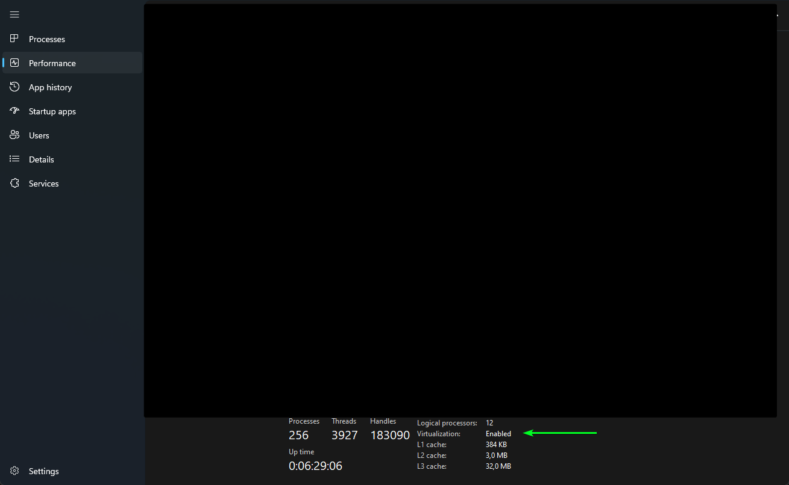
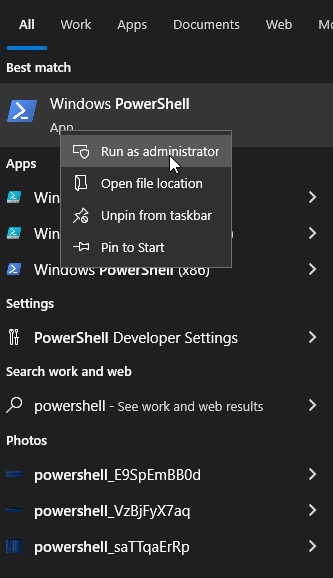
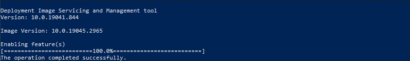
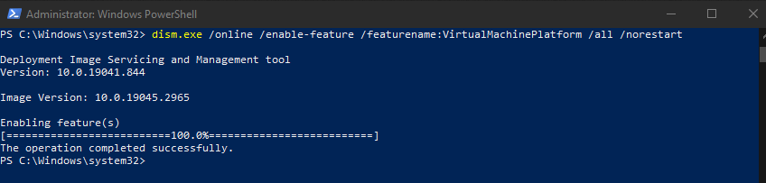
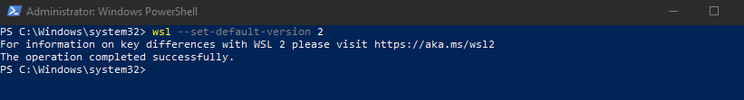

WSL (Windows Subsystem for Linux)
Wsl slouží k instalaci linuxových distribucí na Windows.
Umožňuje spouštět linuxové aplikace přímo na Windows bez potřeby virtuálního stroje.
Instalace
Windows
Important
Pro správnou funkci WSL je nutné v BIOSu/UEFI povolit následující nastavení:
Podpora CPU virtualizace
- U procesorů Intel: Intel VT-x
- U procesorů AMD: AMD-V nebo SVM (Secure Virtual Machine)
Virtualizační technologie
U procesorů Intel: VT-d (pokud je k dispozici)
U procesorů AMD: AMD-Vi (pokud je k dispozici)
Toto nastavení může být označeno jako "Hardware Virtualization"
Vnořená virtualizace (Nested Virtualization)
- Toto nastavení je potřebné pouze v případě, že chcete používat virtualizaci uvnitř WSL, což není běžné pro všechny uživatele.
- V některých verzích BIOSu/UEFI je označeno jako "VT-x/AMD-V Virtualization".
Kontrola povolení virtualizace:
Stiskněte
Ctrl + Shift + EscPřejděte na záložku "Performance" (Výkon)
Dole by mělo být "Virtualization: Enabled"
Viz zde na obrázku:
]
Povolení WSL na vašem počítači
Ve výchozím nastavení je WSL na vašem PC deaktivovaný.
(WSL = Windows Subsystem for Linux, umožňuje spouštět Linuxové distribuce na Windows.)
Spustťte jako správce "PowerShell"

Nyní povolíme WSL vložením následujícího příkazu:
dism.exe /online /enable-feature /featurename:Microsoft-Windows-Subsystem-Linux /all /norestartNote
Pokud vše proběhlo v pořádku, výstup bude vypadat takto:

Povolení platformy Virtual Machine a WSL 2 na Windows
Pro spuštění nejnovější verze WSL, což je WSL 2, musíte povolit "Windows Virtual Machine Platform".
Použijte tento příkaz:
dism.exe /online /enable-feature /featurename:VirtualMachinePlatform /all /norestartNote
Výstup bude podobný tomuto:

Important
Aby se všechny nové změny a povolené funkce projevily, musíte restartovat počítač.
Stažení aktualizace Linux jádra
Nyní je čas stáhnout a nainstalovat aktualizační balíček linuxového jádra.
Note
Narazil jsem na problém, kdy WSL nefungoval správně s Dockerem, dokud jsem nenainstaloval poslední aktualizaci, která vše opravila.
Proto doporučuji stáhnout a nainstalovat poslední aktualizaci jádra.
Nastavení WSL 2 jako výchozí
Nyní je čas nastavit nejnovější verzi WSL, tedy WSL 2, jako výchozí.
Toho dosáhnete otevřením dalšího PowerShell terminálu jako správce (jak bylo ukázáno dříve) a spuštěním následujícího příkazu:
wsl --set-default-version 2Note
Výstup bude vypadat takto:

Instalace linuxové distribuce podle vašeho výběru pomocí WSL
Nyní, když jsme plně připravili systém a nainstalovali všechny požadavky, můžeme konečně pokračovat s instalací linuxového subsystému na náš počítač.
Stáhneme si libovolnou linuxovou distribuci podle našeho výběru "RootFS" (Root File System) a nainstalujeme ji pomocí WSL.
Například pro Ubuntu
wsl --import Ubuntu-22.04 C:\WSL\Ubuntu2204 C:\UbuntuRootFS\ubuntu-jammy-wsl-amd64-ubuntu22.04lts.rootfs.tar.gz --version 2Note
Ubuntu-22.04= Název distribuce,který chcete použít.C:\WSL\Ubuntu2204= Cesta, kde chcete mít nainstalovanou distribuci.C:\UbuntuRootFS\ubuntu-jammy-wsl-amd64-ubuntu22.04lts.rootfs.tar.gz= Cesta k souboru, který jste stáhli.--version 2= Použití WSL 2 jako výchozí verze pro tuto distribuci.Nyní ověříme, zda je distribuce nainstalována správně pomocí příkazu:
wsl --listWarning
Pokud ste nainstalovali špatně distribuci, můžete ji odstranit pomocí příkazu:
wsl --unregister <distro name>Například:
wsl --unregister Ubuntu-22.04
To je vše, nyní máte nainstalovaný WSL na vašem počítači včetně linuxové distribuce.
Pro detailní informace o instalaci WSL2 najdete kompletní návod na blogu Contabo.